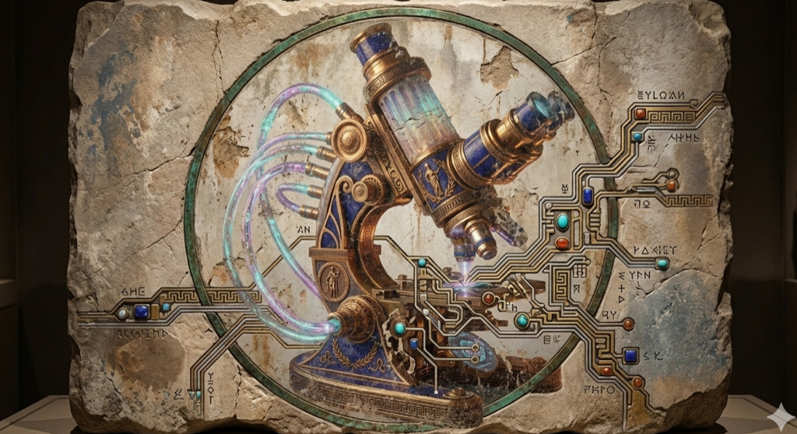
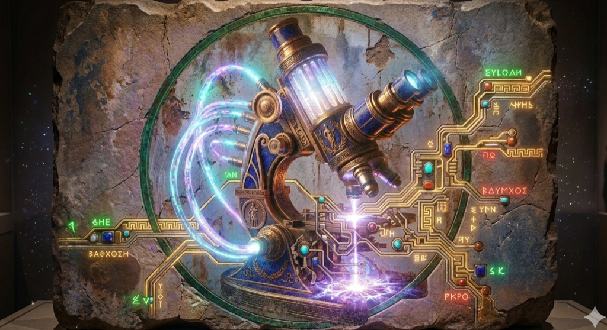
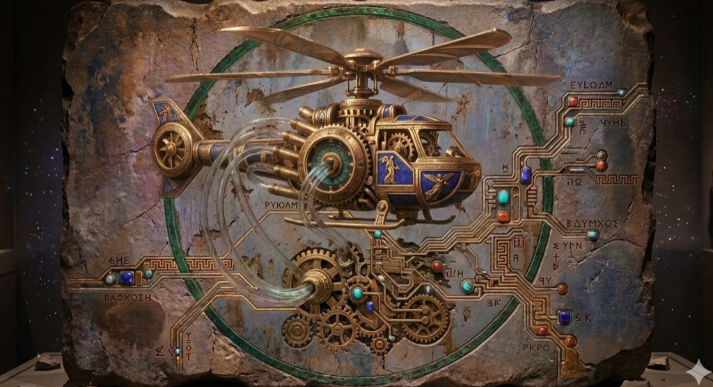
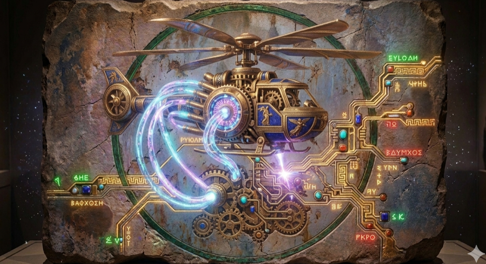
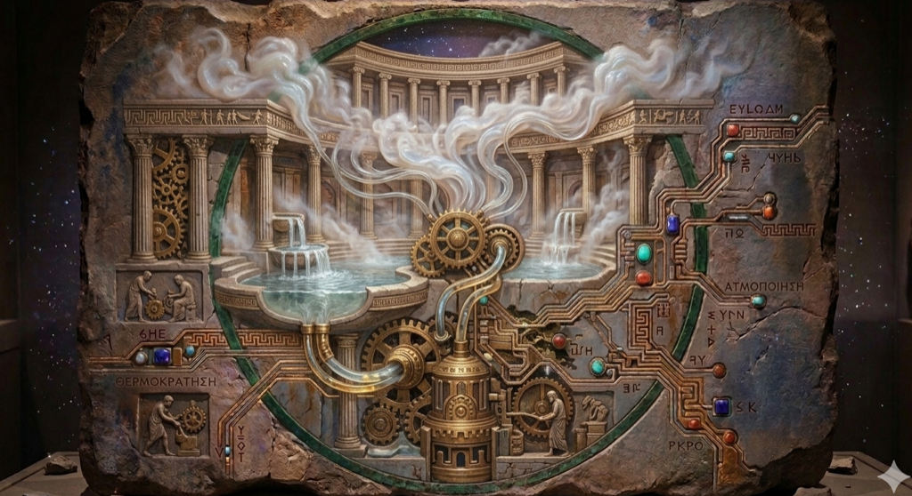
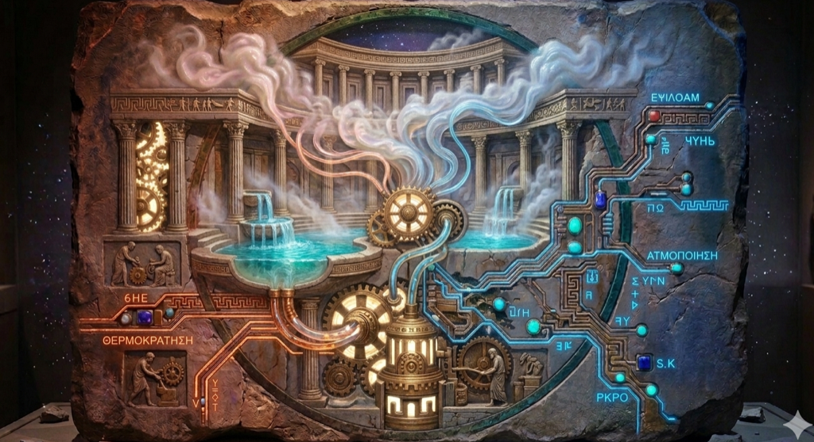

Same items, sorted by priority then status. Click any item to open it in the floor drawer.
Items by last touch (status changes recorded in this PoC). Untouched items at bottom.
Kanban-style board. Click any card to open it in the floor drawer.
Active leg rendered as a five-stage circuit. Each zone is one phase of the leg; signal flows top-to-bottom from the power source (Frame) to the output stage (Debrief).
A week's planned arc. Set the theme, name the target, place the pieces on the board, and name the bail conditions. Per-leg Frame picks from the course.